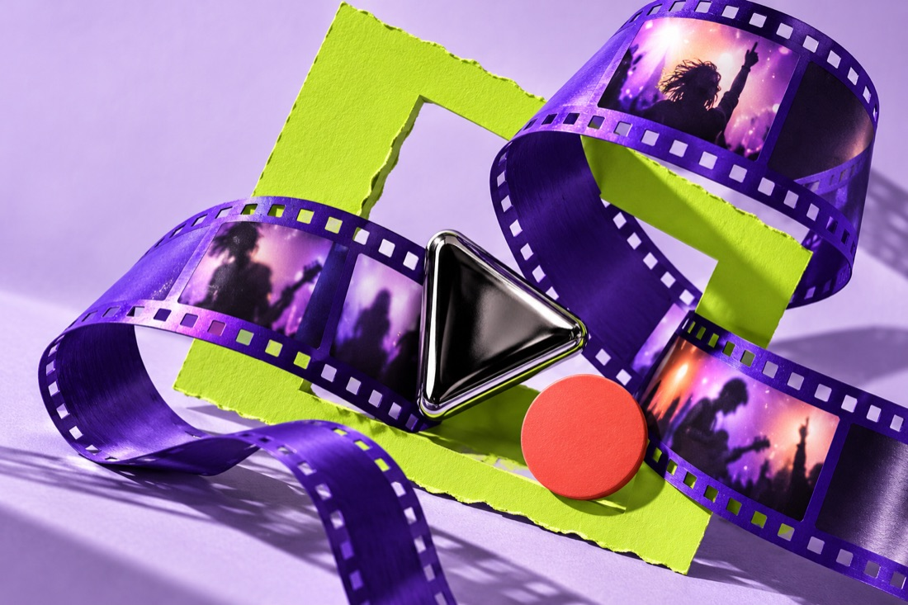
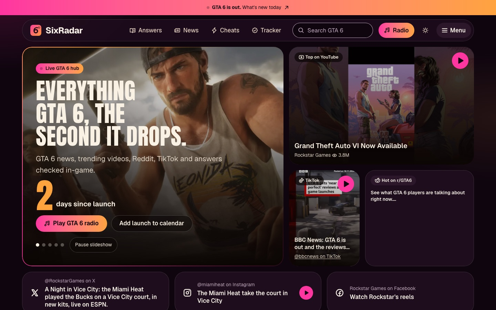
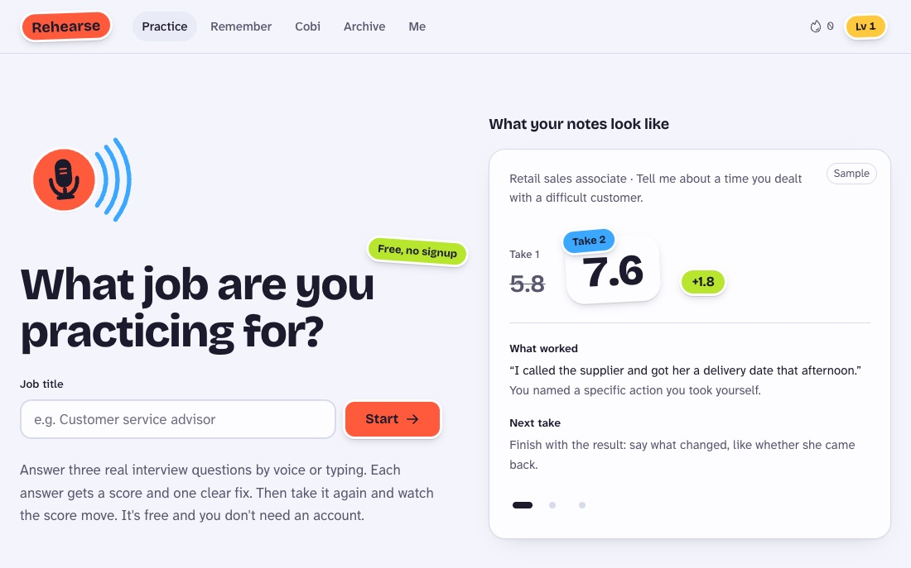
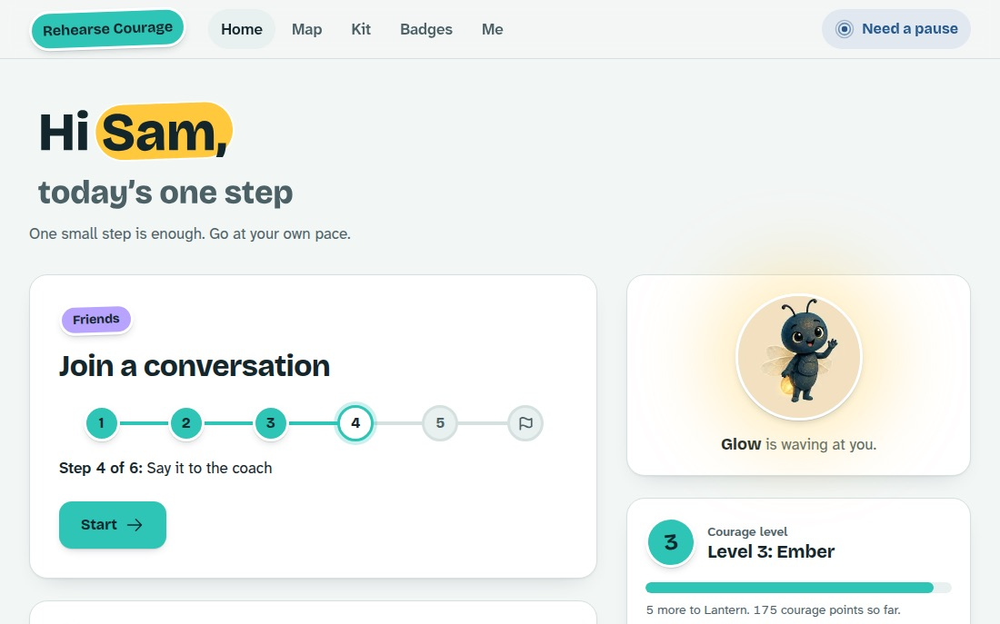
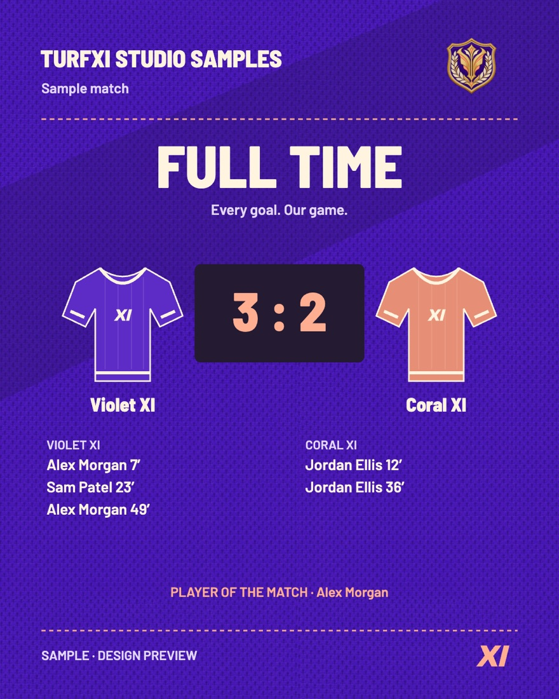
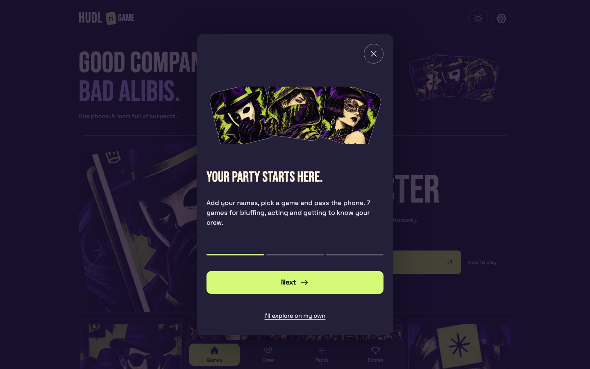

Voice AI
Software you talk to
A live interviewer that listens, reacts and asks a follow-up. Speech that runs on the visitor's own device. Coaching voices in twelve languages.
Rehearse · Rehearse Courage · Context Desk
Four years shipping for 800,000+ customers at Plusnet and TCS. This year I launched ten products of my own, built for the Meta AI Developer Hackathon, and grew a launch-week video channel to 30K+ views.
Video views from the SixRadar channel dashboards across YouTube, TikTok, Instagram and Facebook, 23 Nov 2026. Page speed from Cloudflare Web Analytics, last 7 days.
What I bring
I take an idea to a live product on my own, then make the content that gets people to it. Most of my work sits in three areas.
Voice AI
A live interviewer that listens, reacts and asks a follow-up. Speech that runs on the visitor's own device. Coaching voices in twelve languages.
Rehearse · Rehearse Courage · Context Desk
Content and growth
I built SixRadar's YouTube, TikTok, Instagram and Facebook channels from zero to 30K+ views in launch week. I pick moments from the data, write the hooks, design the covers and let the analytics choose the next video.
YouTube · TikTok · Context Desk · GA4 · A/B tests
AI you can trust
AI drafts, people approve. Every claim links to its source. Security holes get a test so they stay closed.
TurfXI · Revamp · Bubiqo · ORUK Navigator
Selected work

A local video studio that finds the real story moments in long recordings, writes multilingual subtitles to review, and exports ready-to-post clips. Meta Muse Voice transcribes; Muse Spark reads sampled frames and transcripts to suggest story cuts. It clips live streams, subtitles in 25 languages and makes voice-cloned dubs. After I submitted it to the hackathon, I took the code private and now use it as my own live-clipping studio.
The hard part: AI suggestions stay drafts, with the source evidence beside them, so an editor can check every caption and cut before anything is exported.

An independent GTA 6 news, tools and community site I designed, built and run, live for the biggest game launch of the year. Live news and video from YouTube, TikTok, Reddit, X and Instagram, sourced answers, an interactive map, a live blog, a radio and a daily quiz. I also run its video channels: 30K+ views in launch week, with one Short alone at 3,200.
The hard part: nothing is published without an official source or two independent sites that agree. The build fails if a rumour slips in.

Interview practice for people who never get coached: school leavers, career changers, anyone with a gap or a record they dread being asked about. Answer out loud, get a score and one thing to fix, try again. In hands-free mode the interviewer listens, reacts and asks a follow-up.
The hard part: natural voice that costs nothing. Speech runs on the visitor's device in a background thread, with three fallbacks, and notes switch to built-in ones instead of a paywall.

For anyone who finds it hard to speak up: in class, with friends, on a phone call. Six small steps from thinking it to doing it, calm-down tools and a tiny real-life dare each day. It rewards trying and never scores pauses or stutters.
The hard part: safety by design. Under 13s never touch generative AI, and typed text is checked on the device for signs someone needs support.

The operating system for grassroots football, even on pitches with no signal: fixtures, squads, live match events, payments, stats, and shareable full-time cards like this one.
The hard part: I found a database policy that let one manager read another team's data. The fix is held in place by a test that signs in as two people and proves the door stays shut.

Good company, bad alibis. Seven party games on one shared phone, for bluffing, acting and getting to know your crew. Each game has its own visual world and characters, and the packs work offline with no accounts or ads.
The hard part: five private roles on one shared screen. Holding reveals your secret; letting go, switching apps or leaving the page hides it again.
Content and analytics
I don't only build the product. I start the channel, make the videos and read the numbers. For GTA 6 launch week I launched SixRadar's channels on YouTube, TikTok, Instagram and Facebook and ran them like a growth experiment.
Step 1 · Find the moment
I capture live streams with their chat, then a script I wrote ranks the moments where chat spikes. Only the peaks get cut.
Step 2 · Package it
Vertical reframe, captions checked line by line, a title written as a hook and a bold cover designed for the feed.
Step 3 · Measure and repeat
I track which formats land. Free-roam chaos clipped far better than story missions, so the next batch leaned into it.
Also shipped
How I think
Building is half the job. The other half is deciding what the product should refuse to do.
What I'd build next
Experience
May 2026 – now
Own products
Apr 2023 – May 2026
Tata Consultancy Services, for Plusnet
Nov 2025 – Feb 2026
Etsy, alongside TCS
Sep 2022 – Apr 2023
Plusnet
Aug 2021 – Feb 2022
Fusion IT Management
Toolkit
Build
TypeScript, React, Next.js, React Native and Expo, Node.js, Astro, PostgreSQL and Supabase, Cloudflare Workers, D1, PWAs, Playwright
AI and voice
LLM apps with Claude, Groq and Ollama, speech to text with Whisper, on-device TTS with Kokoro, Meta Muse, agent workflows, prompt and fallback design
Content, growth and product
YouTube Shorts and TikTok, hooks and titles, cover design, YouTube and Cloudflare analytics, GA4 and data layers, A/B testing, SEO, paid social on Facebook and Etsy, UX research. BSc (Hons) Web Development, 2:1, Manchester Met
Looking for a product engineering or developer advocate role at an AI team. Ten products launched this year, a notebook full of what's next, and the content skills to get them noticed. I'll ship fast and help your product grow.
asfcit15sayamajmal@gmail.com